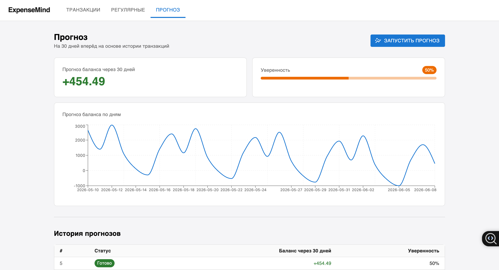
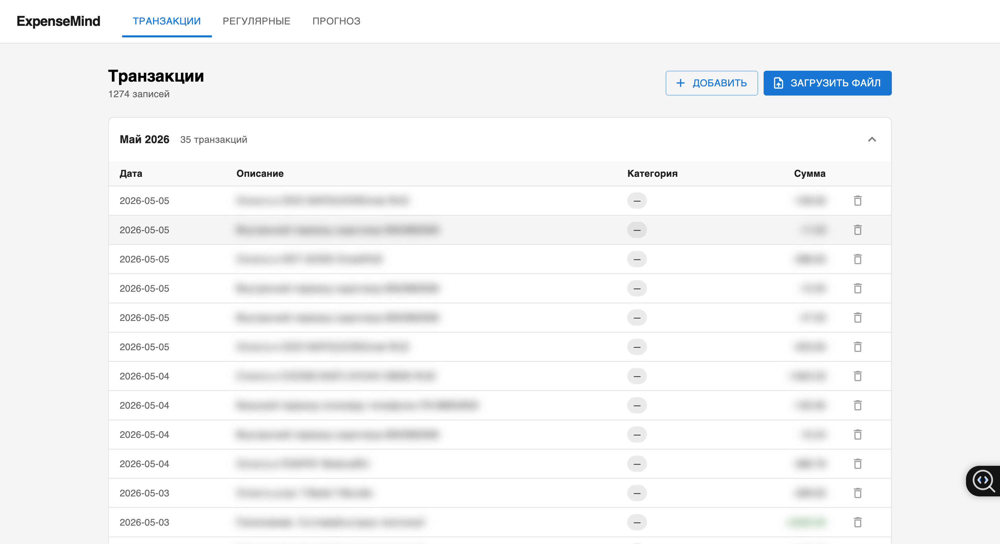
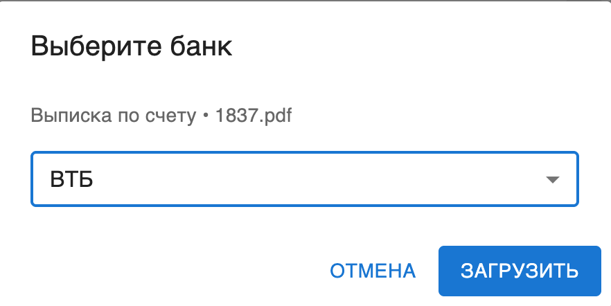
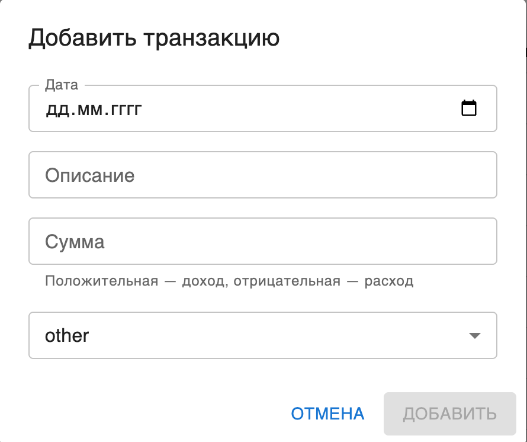

Локальный инструмент учёта личных финансов с ML-прогнозированием баланса. Работает полностью на твоей машине — данные никуда не уходят.
// проблема
Большинство трекеров финансов требуют регистрацию, синхронизируют данные с облаком и собирают аналитику о тратах. Личные финансы — одна из самых чувствительных категорий данных, и доверять её сторонним сервисам не хочется.
При этом простые self-hosted альтернативы упираются в скучный учёт: категории, графики, экспорт в CSV. Никакой помощи от софта — только ручной ввод и ретроспектива.
// решение
ExpenseMind запускается одной командой через Docker и хранит всё в SQLite на твоей машине. Загружаешь PDF-выписку из банка — получаешь категоризированный список транзакций и прогноз баланса на 30 дней вперёд.
Прогноз строится локальной Prophet-моделью с учётом сезонности. Никакого облака, аккаунтов и подписок.
// что умеет
// интерфейс




// архитектура
Браузер (React + MUI) │ HTTP / JSON │ Go Backend ──── SQLite │ HTTP / JSON │ Python ML-сервис (stateless)
// поддержка банков
| банк | формат | метод |
|---|---|---|
| Т-Банк | PDF выписка | native parser |
| ВТБ | PDF выписка | pdftotext |
| Сбербанк | PDF выписка | pdftotext |
| Ozon Банк | PDF выписка | pdftotext |
| любой | CSV (`;`-разделитель) | native parser |
// api
// стек
// установка
Нужны Docker Desktop и git. Дальше: